Every merge request that needs you, in one calm queue Toutes les merge requests qui vous attendent, dans une seule file
Mergeflow follows your GitLab projects, shows what is ready to review or merge, and nudges your team with native notifications before reviews go stale. Jira tickets and AI reviews are one click away. Mergeflow suit vos projets GitLab, montre ce qui est prêt à relire ou à fusionner, et relance l'équipe par des notifications natives avant qu'une revue ne traîne. Les tickets Jira et les revues IA sont à un clic.
Read-only GitLab token · nothing leaves your computer except calls to your own GitLab and JiraJeton GitLab en lecture seule · rien ne quitte votre ordinateur, sauf les appels à votre GitLab et à votre Jira
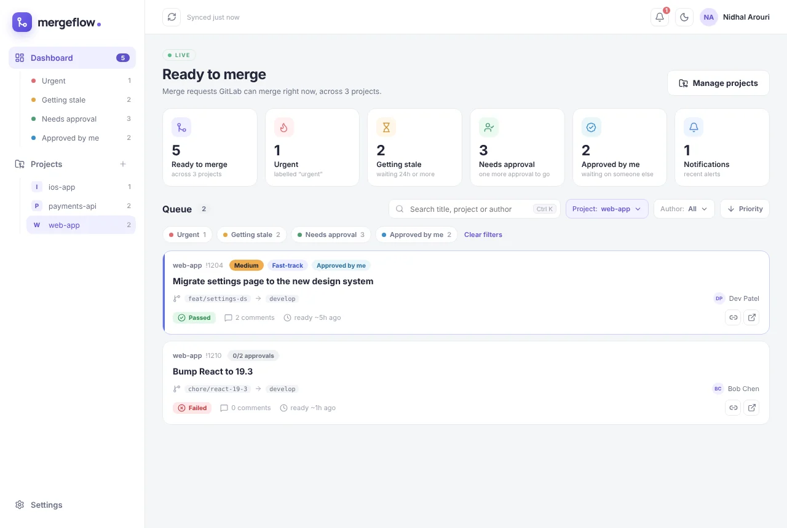
Reviews stop slipping through the cracksPlus aucune revue n'est oubliée
GitLab's to-do list tells you what changed. Mergeflow tells you what is waiting, for how long, and on whom.La liste de tâches de GitLab dit ce qui a changé. Mergeflow dit ce qui attend, depuis combien de temps, et qui doit agir.
One queue for all projectsUne file pour tous les projets
Open merge requests that are mergeable or waiting only on reviewers, across every project you follow, sorted urgent first, then stale, then by severity.Les merge requests ouvertes, fusionnables ou qui n'attendent que des relecteurs, sur tous vos projets, triées : urgentes, puis en retard, puis par gravité.
Native nudges for stale reviewsDes relances natives pour les revues en retard
macOS and Windows notifications when an MR turns urgent, becomes ready, goes stale, or someone answers your thread. Click one to open the MR.Des notifications macOS et Windows quand une MR devient urgente, prête, en retard, ou qu'on répond à votre fil. Un clic ouvre la MR.
Context without the tab huntLe contexte, sans chercher l'onglet
Description, pipeline, approvals and every thread, flagged "awaiting you" or "waiting on author", with formatted Markdown.Description, pipeline, approbations et chaque fil de discussion, marqué « vous attend » ou « attend l'auteur », avec le Markdown mis en forme.
Jira ticket inside the MRLe ticket Jira dans la MR
Jira Cloud or Data Center. An issue key in the title, branch or labels brings in the ticket's status, type, priority, assignee and description.Jira Cloud ou Data Center. Une clé de ticket dans le titre, la branche ou les labels affiche son statut, son type, sa priorité, son assigné et sa description.
AI review with your own CLIRevue IA avec votre propre CLI
Run Claude Code or GitHub Copilot CLI on an MR, with your agents and skills or Mergeflow's Clean Code reviewer. Findings stay on your machine.Lancez Claude Code ou GitHub Copilot CLI sur une MR, avec vos agents et vos skills ou le relecteur Clean Code de Mergeflow. Les remarques restent sur votre machine.
Read-only and privateLecture seule et privé
A read_api token stored in your system keychain. No account, no server, no tracking. Mergeflow never writes to GitLab.Un jeton read_api rangé dans le trousseau du système. Pas de compte, pas de serveur, pas de pistage. Mergeflow n'écrit jamais dans GitLab.
See it in 80 secondsDécouvrez-le en 80 secondes
A short tour of the queue, notifications, Jira and AI review.Une courte visite de la file, des notifications, de Jira et de la revue IA.
Recorded during the beta, with mock data.Enregistrée pendant la bêta, avec des données fictives. Voix française entraînée sur le corpus SIWIS (CC BY 4.0).
Know what to review nextSavoir quoi relire ensuite
Each card shows labels, approvals, pipeline, comments and how long the MR has been ready. Filter by project, author or team, or press Ctrl/⌘ K to search.Chaque carte affiche les labels, les approbations, le pipeline, les commentaires et depuis quand la MR est prête. Filtrez par projet, auteur ou équipe, ou cherchez avec Ctrl/⌘ K.
- Sidebar views: urgent, getting stale, needs approval, approved by meVues : urgentes, bientôt en retard, à approuver, approuvées par moi
- Your own urgent label and severity order (Critical, High, Medium, Low)Votre label d'urgence et votre ordre de gravité (Critical, High, Medium, Low)
- Synced every 3 minutes, or whenever you likeSynchronisé toutes les 3 minutes, ou à la demande
- Click a title for the full context: branches, pipeline, approvals, description and Jira ticketUn clic sur le titre affiche tout le contexte : branches, pipeline, approbations, description et ticket Jira
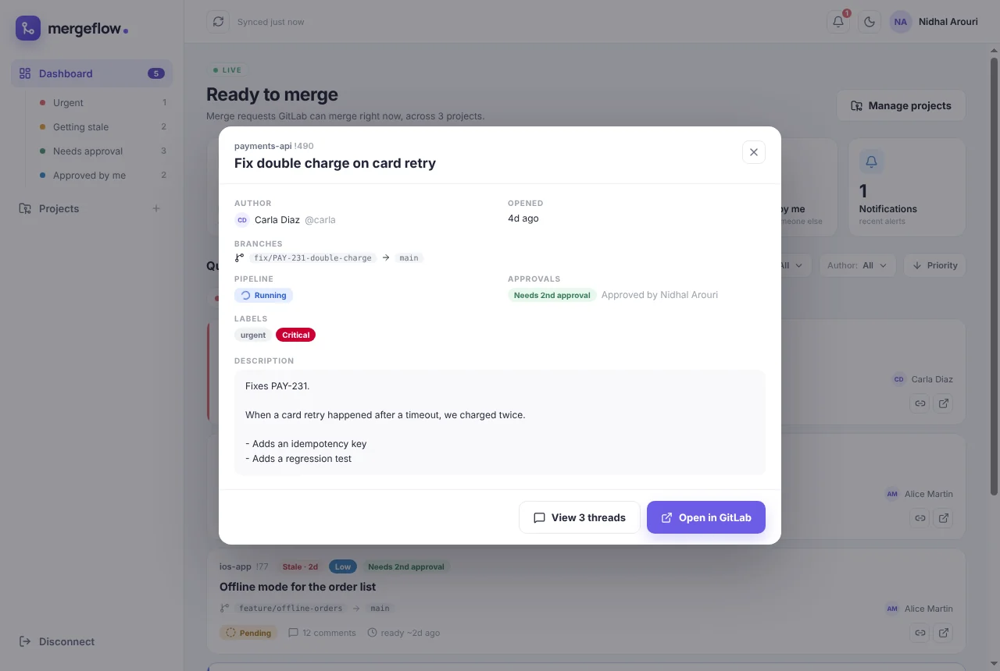
Threads that say who is waitingDes fils qui disent qui attend
Every discussion, unresolved first, marked "Awaiting you", "Waiting on author" or "Resolved". Threads you started are flagged, and you are notified when someone replies.Chaque discussion, les non résolues d'abord, marquée « Vous attend », « Attend l'auteur » ou « Résolue ». Les fils que vous avez ouverts sont signalés, et vous êtes prévenu quand quelqu'un répond.
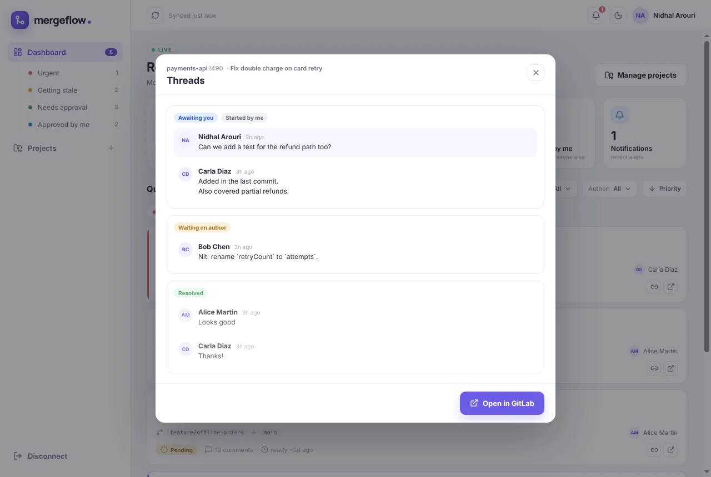
Notifications your team will noticeDes notifications que l'équipe remarque
Native notifications in your language, a bell with an unread count, and a badge on the app icon. Clear them one by one or all at once.Des notifications natives dans votre langue, une cloche avec le nombre de non-lues et un badge sur l'icône de l'application. Effacez-les une par une ou toutes d'un coup.
- Urgent, ready to merge, gone staleUrgente, prête à fusionner, en retard
- Replies and resolved threads you startedRéponses et résolutions sur vos fils
- Token about to expire, 7 and 3 days aheadJeton bientôt expiré, 7 et 3 jours avant
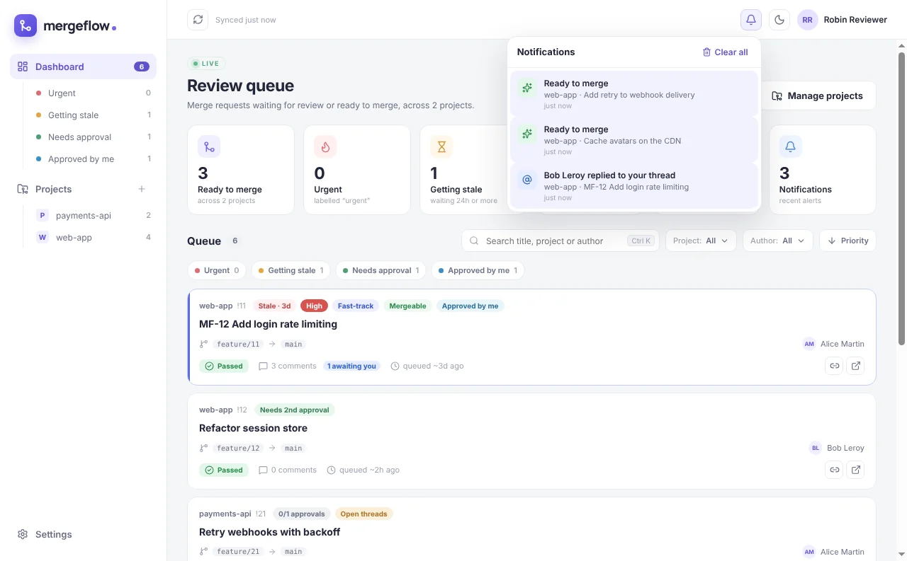
The Jira ticket, right thereLe ticket Jira, juste là
A status badge on the card and the full ticket in the details view. Jira is optional and never slows down the GitLab sync.Un badge de statut sur la carte et le ticket complet dans le détail. Jira est facultatif et ne ralentit jamais la synchronisation GitLab.
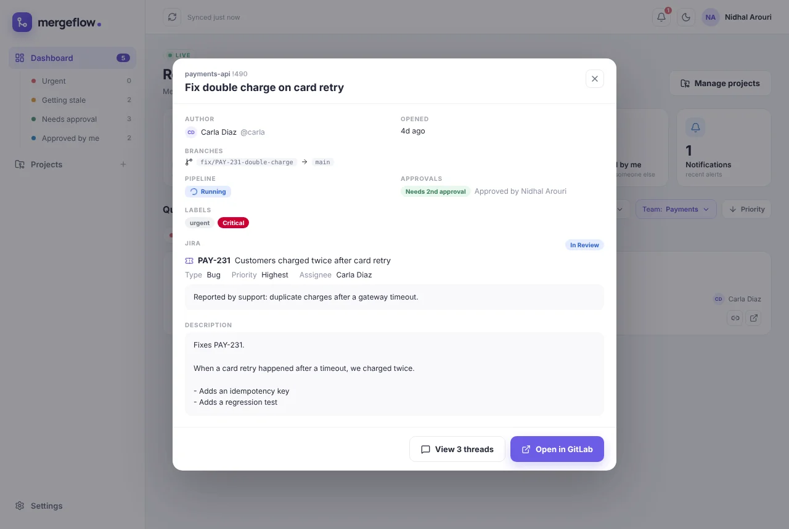
A second pair of eyes, on your termsUn deuxième avis, à vos conditions
Mergeflow hands the MR diff to your own Claude Code or GitHub Copilot CLI, with every tool switched off. Pick an agent and a skill per MR, or use the built-in Clean Code and SOLID reviewer with Mermaid diagrams of the change.Mergeflow confie le diff de la MR à votre propre Claude Code ou GitHub Copilot CLI, tous les outils désactivés. Choisissez un agent et un skill par MR, ou le relecteur intégré Clean Code et SOLID, avec des diagrammes Mermaid du changement.
- Findings on changed lines only, grouped Critical, Major, Minor, NitRemarques sur les lignes modifiées uniquement, classées Critical, Major, Minor, Nit
- Saved as Markdown on your computer, never posted to GitLabEnregistrées en Markdown sur votre ordinateur, jamais publiées dans GitLab
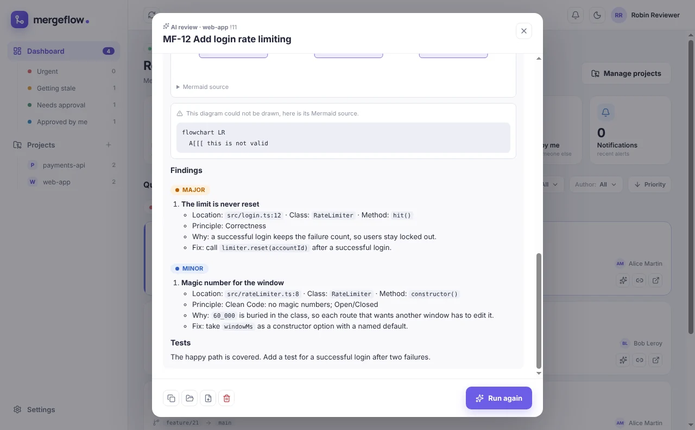
A closer lookDe plus près
English and French, light and dark. Screenshots use mock data.En français et en anglais, en clair et en sombre. Les captures utilisent des données fictives.

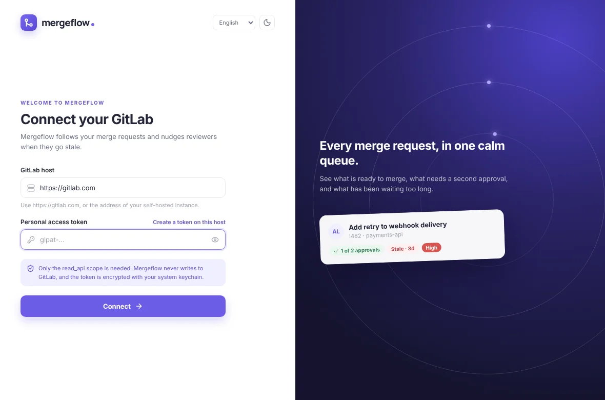

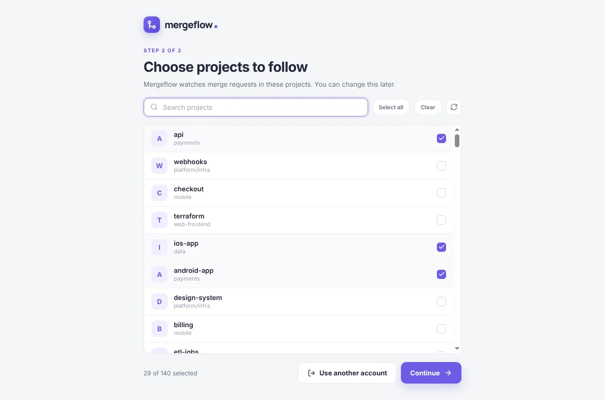

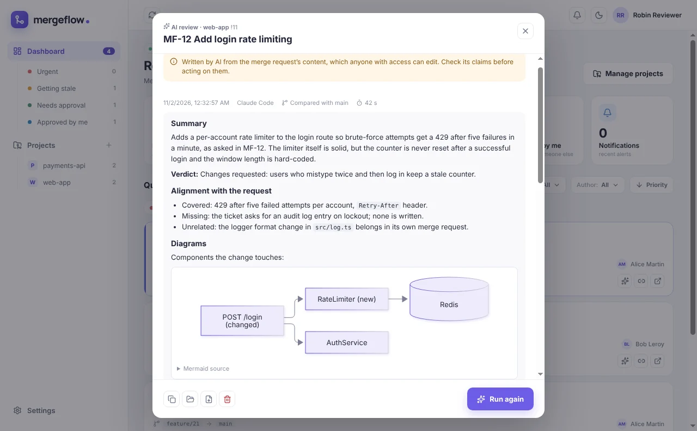

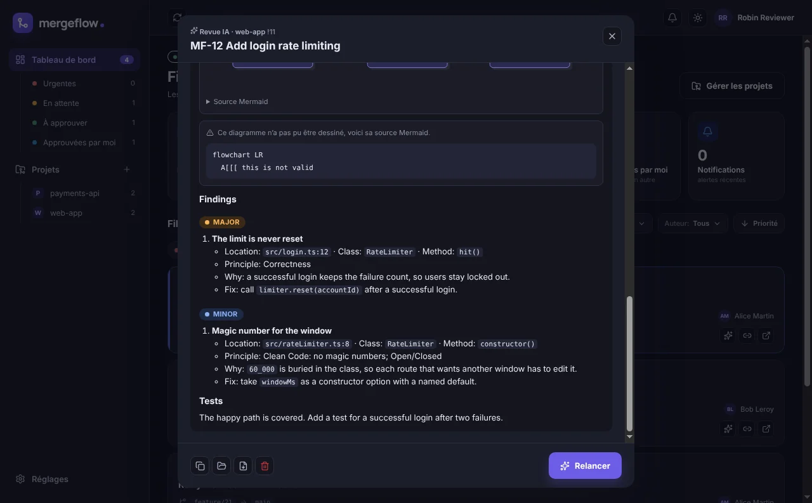

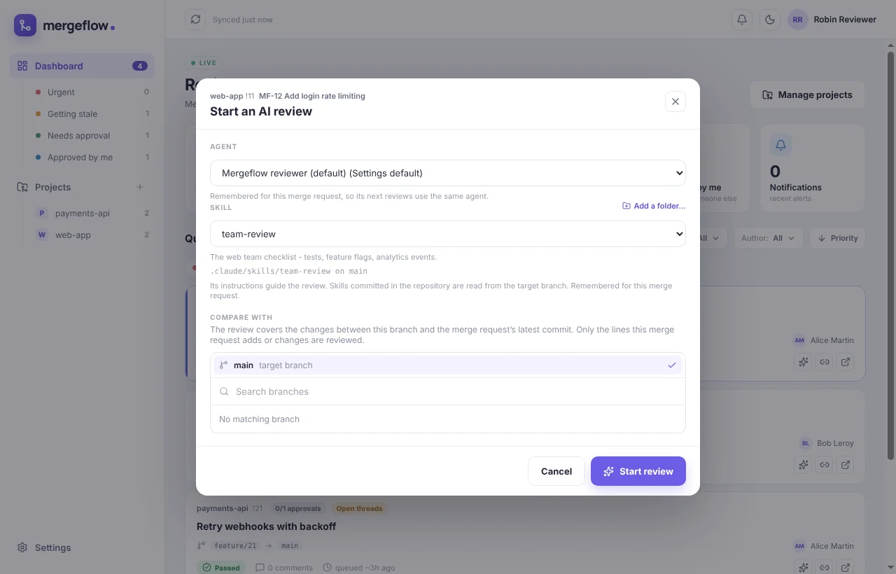

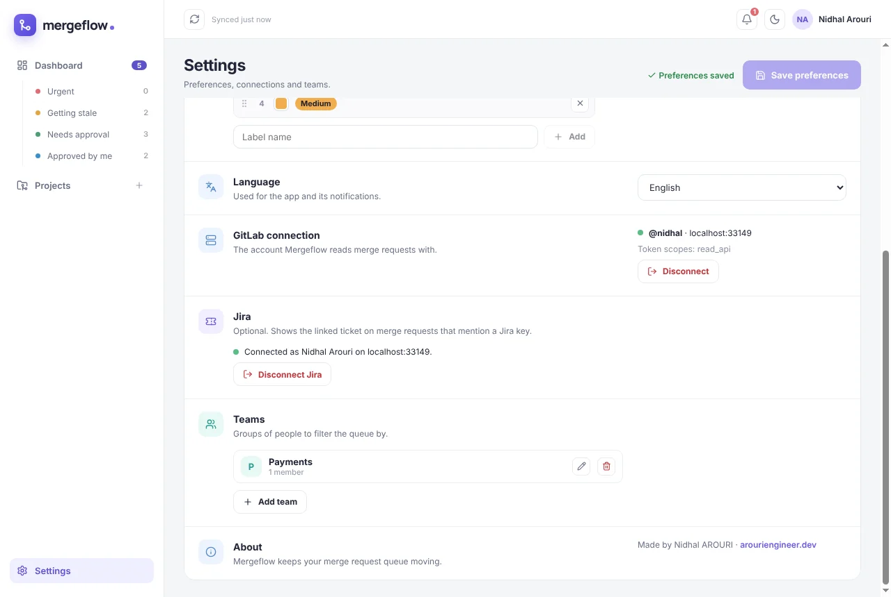
Download MergeflowTélécharger Mergeflow
Free. Installed copies update themselves.Gratuit. Les copies installées se mettent à jour toutes seules.
macOS Your systemVotre système
Apple Silicon (M1 and later)Apple Silicon (M1 et suivants) Intel MacMac Intel macOS asks for one extra step the first time. See how.macOS demande une étape de plus la première fois. Voir comment.Windows Your systemVotre système
Installer (.exe, no admin rights)Installeur (.exe, sans droits admin) Installer in a .zipInstalleur dans un .zip Use the .zip when your network blocks .exe downloads. A portable version runs without installing but does not update itself.Prenez le .zip si votre réseau bloque les .exe. Une version portable se lance sans installation, mais ne se met pas à jour.Version 1.1.0 ·Version 1.1.0 · All releases and release notesToutes les versions
Up and running in two minutesPrêt en deux minutes
Create a GitLab token with the read_api scope, paste it in, pick your projects. That's it.Créez un jeton GitLab avec le scope read_api, collez-le, choisissez vos projets. C'est tout.